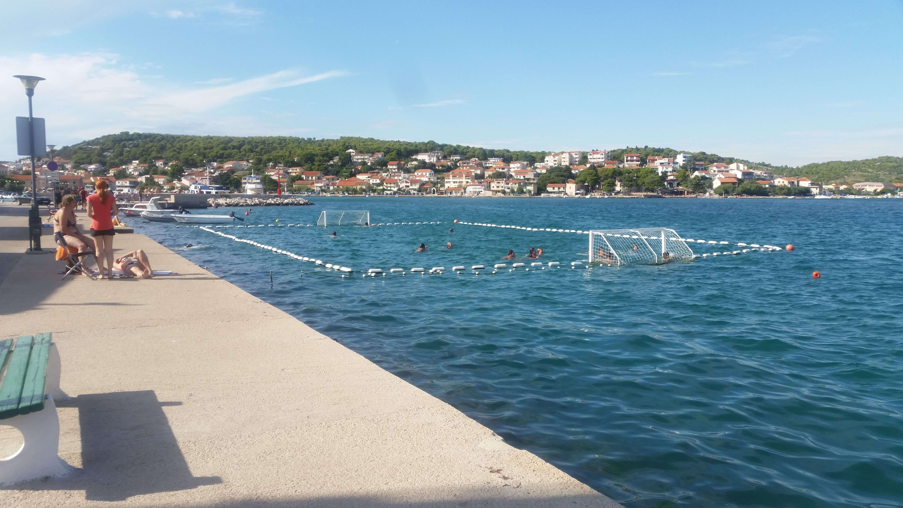

My experience in Croatia!
Located on the southeast side of the island of Murter, and 3 kilometres from the bridge at the village of Tisno, this, the smallest of places on Murter, is named after the small lakes that form in the valleys after spring and autumn rains and which disappear with the arrival of the sun. Jezera has been inhabited since the 13th century, and its residents were then already well-known as skilful sailors.
Mount Mortar is to be found here, after which the island was named. On the small area of arable land grapes, olives and figs are cultivated, which can be enjoyed by tourists as well. From here you can organise excursions to the Kornati islands, and also to other national parks in the Šibenik and Zadar regions.
